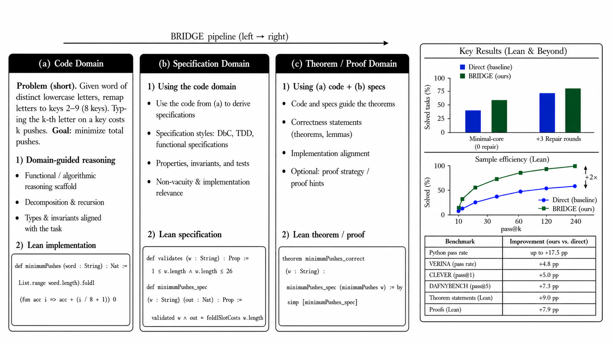

BRIDGE structures LLM program synthesis into code, specification, and theorem/proof artifacts, measuring Lean executable correctness on VERINA and CLEVER.
Abstract
Large language models can generate plausible code, but remain brittle for formal verification in proof assistants such as Lean. A central scalability challenge is that verified synthesis requires consistent artifacts across several coupled domains: executable code, formal specifications, theorem statements, and proof attempts. Existing approaches often treat these artifacts separately. We present BRIDGE, a structured prompting framework for multi-artifact program synthesis. BRIDGE decomposes generation into three interconnected domains: Code, Specification, and Theorem/Proof, and uses domain-specific intermediate reasoning to connect them. In Lean, BRIDGE often follows a code-first workflow, using the generated implementation as a semantic anchor for downstream specification, theorem statement, and proof-attempt generation. Across 178 algorithmic problems and five LLMs, BRIDGE improves Lean executable correctness by up to nearly 1.5x over direct prompting and can be roughly 2x more sample efficient at comparable generation lengths. We further find that specification-oriented prompting improves Python pass rates by up to 17.5 percentage points. Beyond inference-time prompting, supervised fine-tuning on BRIDGE-style reasoning traces yields nearly 1.5x higher Lean pass success than code-only fine-tuning, suggesting that these intermediate representations provide a learnable inductive bias. BRIDGE provides a practical framework for scaling verified synthesis while highlighting the remaining gap between executable correctness and full formal proof generation.
Problem
LLMs can generate plausible code but remain brittle for formal verification in proof assistants. Verified synthesis requires consistent artifacts across coupled domains (executable code, specifications, theorem statements, proofs), which existing approaches treat separately.
Approach
BRIDGE is a structured prompting framework that decomposes generation into three interconnected domains: Code, Specification, and Theorem/Proof. Domain-specific reasoning strategies (functional, specification, theorem/proof reasoning) are linked so that each domain's output informs the others. The framework uses cross-domain signals to improve coherence and correctness.

Figure 1 : BRIDGE methodology and key results. BRIDGE decomposes verifiable coding into linked Code, Specification, and Theorem/Proof domains. The example shows how a problem statement is converted into functional reasoning, specification reasoning, and theorem/proof reasoning, while the accompanying results summarize the main empirical gains from functional scaffolding. Appendix G gives the detai
Results
On VERINA, Qwen2.5 Coder improves from 51/187 to 60/187 pass@1 (+4.8pp). On CLEVER, gains range from +2.5pp to +6.3pp. On DafnyBench, solver-backed pass@5 improves from 315/782 to 372/782 (+7.3pp). Functional reasoning consistently helps across models and benchmarks.
Benchmark
Model
Direct
Functional
Delta
VERINA
Qwen2.5 Coder pass@1
51/187
60/187
+4.8pp
CLEVER
Qwen pass@1
28/161
36/161
+5.0pp
CLEVER
Qwen larger budget
59/161
69/161
+6.3pp
DafnyBench
Solver backed pass@5
315/782
372/782
+7.3pp
Results across benchmarks with functional reasoning